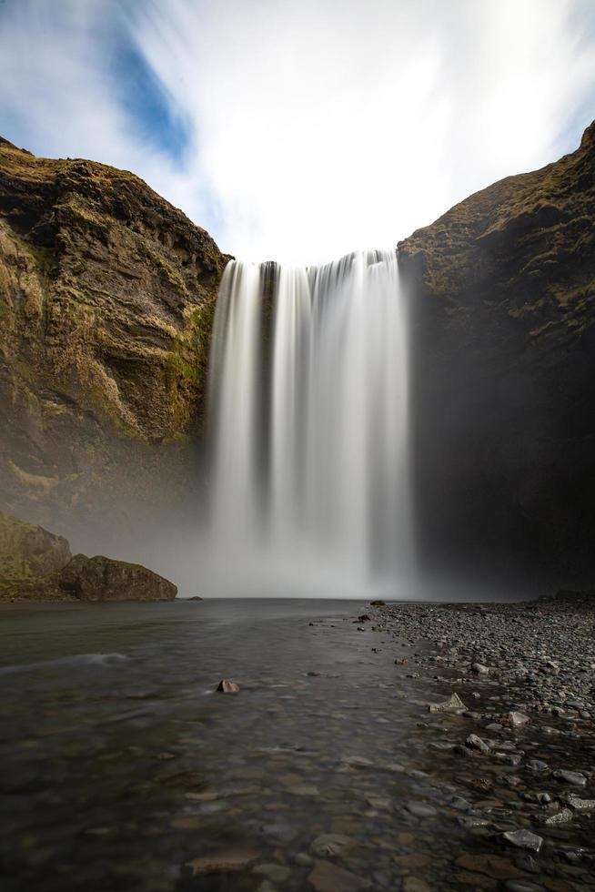
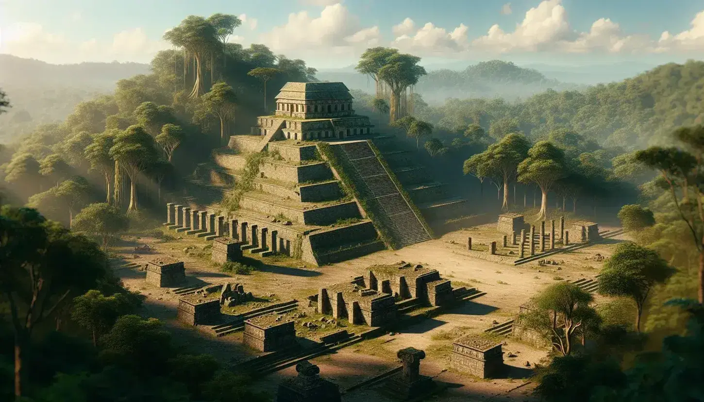
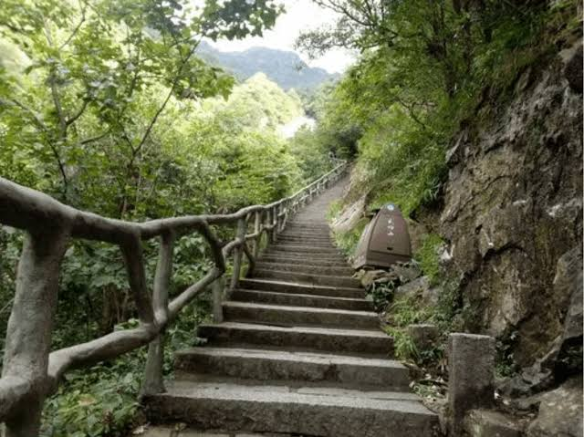

KALLAMARCA es una ciudad turistica ubicada entre imponentes montañas,
por sus paisajes naturales, sus antiguas construcciones de piedra, y
la historia de una antigua ciudad precolombina. Sus visitantes pueden
recorrer lugares historicos, disfruar de sus cascadas y conocer las
tradiciones y leyendas que forman parte de la identidad de la ciudad.



Conoce tradiciones y leyendas, participa en actividades culturales y
descubri expresiones artisticas de la ciudad
Disfruta de caminatas por las montañas, recorridos por sitios arqueologicos
y actividades que permiten conocer la historia y tradiciones de KALLAMARCA
Descubri la historia los paisajes y la cultura de KALLAMARCA